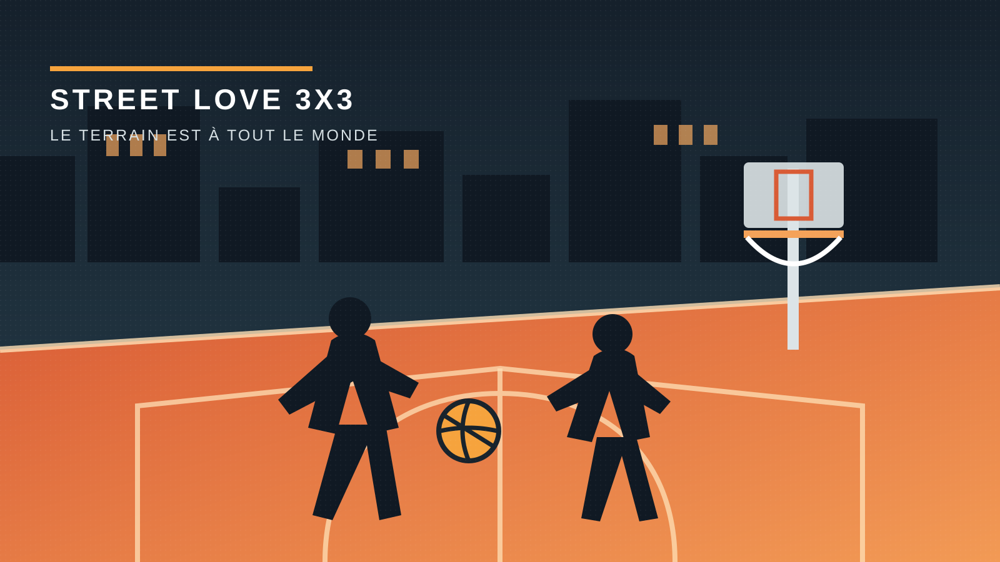

Accessible
Des formats simples, des règles expliquées et une attention portée à l'accueil des débutants.
The People's Sports fait vivre les sports urbains comme espaces de rencontre, de progression et de partage. Avec Street Love 3x3, l'association imagine un rendez-vous de basket accessible, énergique et ouvert à toutes et tous, quel que soit le niveau.

Le sport urbain n'est pas réservé à une élite. Nous voulons créer un cadre accueillant où l'on peut découvrir, jouer, progresser et rencontrer d'autres passionnés.
Des formats simples, des règles expliquées et une attention portée à l'accueil des débutants.
Le plaisir de jouer ensemble compte autant que le résultat. Respect et fair-play guident chaque rencontre.
Basket, culture de rue et expression personnelle se rencontrent dans une ambiance positive.
Un tournoi pilote imaginé autour du basket 3x3, avec des temps de jeu, des initiations et des moments de partage. La date et le terrain seront confirmés après validation du projet.

Indiquez-nous votre intérêt et vos attentes. Le formulaire permet de mieux comprendre les profils, de préparer l'accueil et de recontacter les personnes intéressées.
Manifester mon intérêt